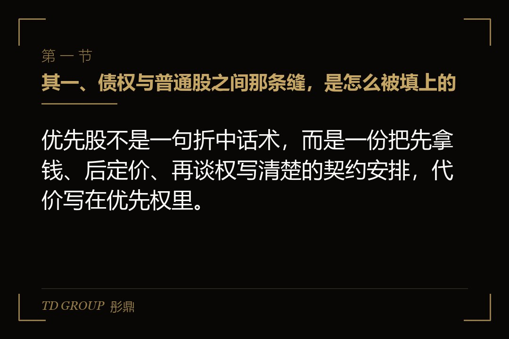
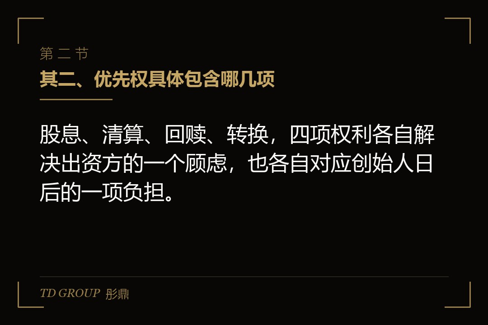
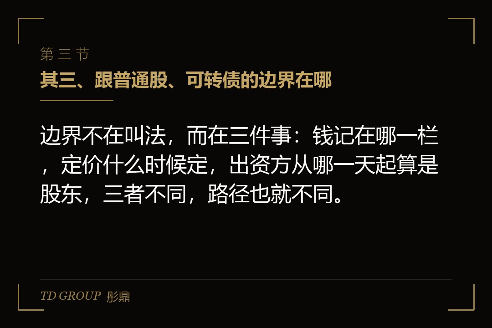
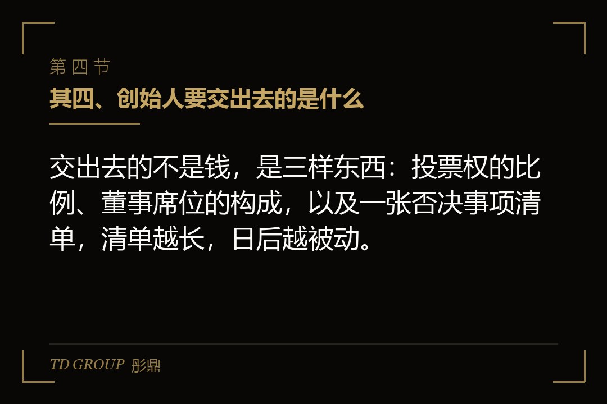
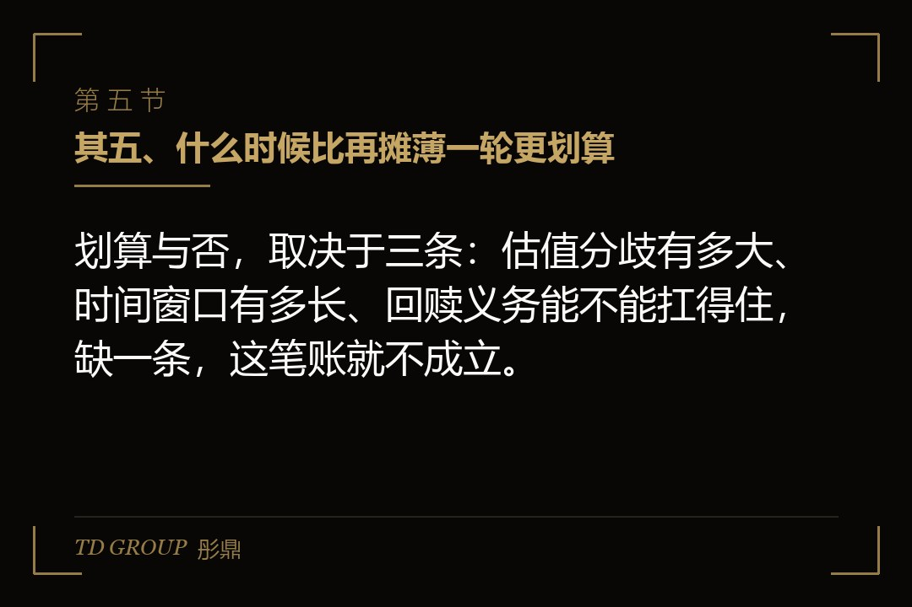
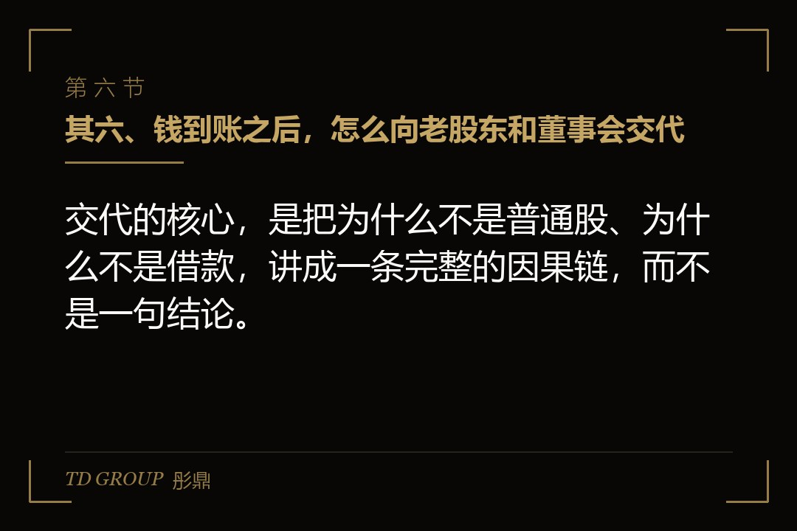

其一、债权与普通股之间那条缝，是怎么被填上的

结论先行：优先股不是一句折中话术，而是一份把先拿钱、后定价、再谈权写清楚的契约安排，代价写在优先权里。
假设一家做工业密封件的民营企业，年营收两亿出头，利润稳定，正准备三年内申报上市。银行给的承贷额已用到八成，再举债会让资产负债率难看，也会牵动已经签下的交叉担保；而按当下的估值再放一轮普通股，创始团队持股要从六成掉到四成出头。
两条路都走不通的时候，第三条路是把资金这件事拆成两层看：先让钱进来，把公司值多少的问题推到下一轮、推到申报前再定；同时给出资方几项写进章程和协议的优先权，作为它接受后定价的补偿。企业经营本就充满不确定，出价的人要的却是确定性，这个落差正是优先股存在的理由。
这就是优先股的位置。它具备股的外形，记在所有者权益里，不进短期借款科目，也不会在负债表上添一笔到期要还的钱；但在分钱的顺序上，它排在普通股前面。对融资方来说，它换来的是喘息的时间；对出资方来说，它换来的是先于他人受偿的确定性。
想明白这一点，后面几节谈的四项权利就有了线索：每一项都是后定价的对价，也都是创始人日后要逐一还回去的东西。动手之前先问自己一句，公司真正需要的是时间，还是只是不肯承认当下的估值。这条路的起点，叫清偿顺序。
其二、优先权具体包含哪几项

结论先行：股息、清算、回赎、转换，四项权利各自解决出资方的一个顾虑，也各自对应创始人日后的一项负担。
股息权说的是分配顺序与方式。常见写法是先按约定比例或按本金计一笔，再与普通股一起按持股参与剩余分配；是否累计、是否参与后续分配，均由个案确定、按协议约定。对融资方而言，真正的压力不在当期现金，而在申报期前这笔应付股息要不要一次性结清。
清算优先权说的是公司被出售或清算时，谁先拿、拿多少、拿完还能不能再分。倍数与是否参与二次分配，同样按协议约定。企业主容易忽略的是，并购与整体出售通常也写进清算事件的定义里，一场看似普通的出售，可能触发这笔钱先走，而留给自己和老股东的部分随之变薄。
回赎权说的是到期日。到了约定时间若上市未成，出资方可要求公司按约定价格把股份买回去；买不起，条款往往会转向董事会控制权的再安排。这是四项里最硬的一项，因为它把不确定性从出资方那里，整个转移到了公司账上，且转移的时间点由别人说了算。
转换权说的是换股。出资方可按约定比率把优先股换成普通股，比率随后续定价调整，这也正是它与反稀释条款相接的地方。对融资方而言，转换比率意味着将来持股被摊薄的上限在哪里，这一条必须自己拿纸算过，不能只听出资方的口径。本节先落一个锚点：转换比率。
把四项放在一起看，分量并不相同：股息与转换是常态安排，清算与回赎只在特定事件下才显形。谈判时常见的错误，是把注意力全放在股息率的高低上，而把回赎日当作很远的事；真正让企业日后被动的，往往是后者。四项按压力排序，本节锚点落在回赎义务。
其三、跟普通股、可转债的边界在哪

结论先行：边界不在叫法，而在三件事：钱记在哪一栏，定价什么时候定，出资方从哪一天起算是股东，三者不同，路径也就不同。
与普通股相比，差别在顺序而非身份。普通股是同股同权、按持股分；优先股在分配和清偿上排在前面，但通常不带同比例的投票权。对准备上市的企业，还要留意申报前优先股往往需要清理或转为普通股，这一步的时间成本常被低估，章程里怎么改也要提前排期。
与可转债相比，差别在债权还是权益。可转债先是一笔债，到期还本或转股；优先股进来就是权益，不占用短期借款科目。假设一家医疗器械公司的账面借款已压到银行容忍上限，它选可转债只会让负债表更难看，选优先股则能保住资产负债率，代价是权益层面的结构变得更复杂。
还有一层边界在会计与税务处理上。利息可以进费用，股息不能；这一进一出对利润表和申报口径的影响，要在签字前让财务负责人完整算过一遍。有些企业到了申报辅导阶段才发现，早年签下的股息条款让利润的呈现方式需要重新解释，平白多耗去几个月时间。
第三种对照看的是退出安排。普通股出资方的退出靠后续轮次或并购，优先股出资方多了一条回赎的路，可转债出资方则先看还本。三条路的压力点并不一样：一个压在估值上，一个压在公司现金上，一个压在到期日上。三件事想清楚，本节锚点落在科目归属。
其四、创始人要交出去的是什么

结论先行：交出去的不是钱，是三样东西：投票权的比例、董事席位的构成，以及一张否决事项清单，清单越长，日后越被动。
投票权方面，优先股常按约定比率折算投票权，或就特定事项单独成类表决。所谓类别表决，是指某些事项必须经优先股股东单独同意方可通过，普通股票数再多也绕不过去。企业主在签字前，应当把需要单独同意的事项一条条列出来核对，而不是只看一句概括的表述。
董事席位方面，出资方通常要求至少一席，并由协议约定该席位的产生方式。假设一家做连锁检验服务的企业在谈判中让出两席，董事会从五席变成七席，创始团队仍能占多数，但议程的主导权已经不完全在自己手里，会前的沟通成本也会上升。
否决事项是清单最长、也最容易谈崩的一块，常见包括增发新股、举借超过额度的债务、出售核心资产、改变主业、修改章程、创始团队转让股权等。清单越长，公司日常决策被卡住的地方越多；一项看似例行的设备抵押，也可能因为写进了清单而要多开一次会。
谈这一块有个朴素的做法：把清单按会不会动摇出资方本金安全筛一遍，只留下真正相关的，其余改成事后告知。谈判时要守住一条线——凡是涉及主营方向的决定，不宜写进需要他人同意的范围。三项让步谈完，本节锚点落在否决事项。
其五、什么时候比再摊薄一轮更划算

结论先行：划算与否，取决于三条：估值分歧有多大、时间窗口有多长、回赎义务能不能扛得住，缺一条，这笔账就不成立。
情形一，估值分歧大。创始团队认为公司值三十亿，出资方只肯按二十亿进。若按二十亿放普通股，摊薄立竿见影；换成优先股，把定价推到下一轮，涨出来的部分由双方按约定分享。假设一家做精密结构件的企业正处在这样的分歧里，优先股给了它不必当场认价的机会。
情形二，时间窗口短。若公司距申报只剩不到两年，估值大概率随业绩上修，那么用优先股把定价后移，比现在低价放普通股更省；反过来，若业绩下行、申报时间表不明朗，后定价只是把问题推到更坏的一天，届时谈判的位置只会更弱。
情形三，现金扛得住。回赎日是硬约束。若企业未来两年的经营性现金流无法覆盖潜在的回赎支出，优先权里的这一项就会变成一场被动的再谈判。要不要走这条路，财务负责人应先按最坏情形做一遍现金推演，把订单回款节奏也算进去。
还有一种情形要排除在外：如果商业模式尚未验证、分红能力偏弱，出资方对股息与回赎的要求只会更硬，此时优先股并不比普通股温和。反过来说，现金流稳定、订单能见度高的企业，才有资格把定价往后推。权衡完毕，本节锚点落在时间窗口。
其六、钱到账之后，怎么向老股东和董事会交代

结论先行：交代的核心，是把为什么不是普通股、为什么不是借款，讲成一条完整的因果链，而不是一句结论。
对老股东，要交代三件事：进了多少钱，摊薄往后推了多少，公司为此承担了哪些未来的现金义务。假设前述那家密封件企业在股东会上只讲估值、不讲回赎，半年后条款显形时，创始人损失的信用远大于当初省下的持股，往后每一次签字都会被追问。
对董事会，要把四项优先权逐条落到决议与章程里，并明确披露口径。特别是回赎义务，是否需要在报表附注中体现、对申报口径有无影响，应当让审计机构提前看一次，不要等到申报辅导阶段才回头补材料、补决议、补签字。
对内部团队，沟通重点应放在钱用来做什么，而不是条款细节。假设同一家企业把这笔钱投进第二条产线并按时投产，两年后的优先股清理就是一次技术性动作；若钱长期躺在账上不产生回报，条款就会变成悬在头顶的事，管理层也会失去解释的余地。
最后一件事是记时间：股息起算日、回赎触发日、申报前清理的截止日，三个日期应在签约当天就写进公司的时间表，并指定一名高管按月核对。很多麻烦不是条款本身造成的，而是没有人盯着日历造成的。全文收束于此，锚点落在申报前清理。